同一个带 SMIL 按钮的 SVG，用四种方式嵌入
<img> 将 SVG 视为静态光栅图像，浏览器对其施加严格的安全隔离：
begin="btn.click" 不触发——点击事件不会穿透到 SVG 文档内部:hover 伪类不生效——鼠标悬停在 img 上，SVG 内部元素感知不到<a xlink:href> 链接不可点击<script> 不执行<object>/<iframe>/直接打开 SVG/内联 SVG 中按钮完全正常。
按钮点不动、hover 不变色、链接打不开。SVG 被当作静态图片。循环动画生效，但交互完全失效。

SVG 作为独立文档加载。按钮点击、hover 变色、链接跳转全部正常。SMIL begin="click" 正常工作。
SVG 作为独立插件文档加载。交互完全正常，可以点击按钮、hover、点链接。
SVG 在独立 frame 中加载。交互完全正常，有沙箱隔离。
| 嵌入方式 | CSS 动画 (含循环) |
SMIL 按钮 begin="click" |
CSS :hover | <a> 链接 | SVG 内 <script> |
外部 JS 控制 |
|---|---|---|---|---|---|---|
| 直接打开 .svg | ✅ | ✅ | ✅ | ✅ | ✅ | — |
| <img src> | ✅ | ❌ | ❌ | ❌ | ❌ | ❌ |
| <object data> | ✅ | ✅ | ✅ | ✅ | ✅ | ⚠️ 同域 |
| <iframe src> | ✅ | ✅ | ✅ | ✅ | ✅ | ⚠️ 同域 |
| 内联 <svg> | ✅ | ✅ | ✅ | ✅ | ✅ | ✅ |
<img> 嵌入 GitHub README、文档——只放循环动画（边数据流）和一次性入场动画，不放按钮。用户双击打开 .svg 时按钮可用，但通过 img 嵌入时按钮不工作也不影响（因为无按钮场景不需要交互）。<img> 嵌入。有两个选择：
<img>，所以只能展示自动播放的循环动画（数据流、脉冲等），不展示 Steps 交互——这是可接受的，GitHub 里的 README 本来就不需要交互。